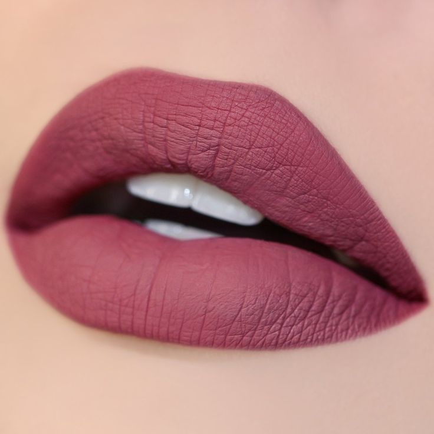
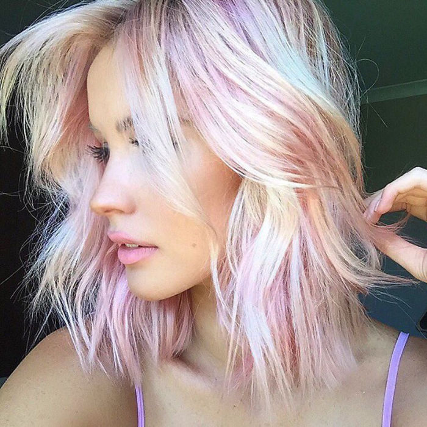

Su uso en maquillaje se está disparando por el toque llamativo y sutil que lo caracteriza. ¿Te gustaría saber más? Te contamos cómo se lleva la tendencia de las sombras de ojos naranja.
El strobing es la tendencia que más fuerte está pisando en cuanto a estilos de maquillaje en los últimos meses. Tanto es así que ya casi ha desterrado a otros tipos de maquillaje, como el contouring. ¿Quieres saber de qué se trata? Te contamos todo sobre el strobing, la nueva tendencia en maquillaje que acabó con el contouring.

Los labios mate serán la máxima tendencia en cualquiera de sus tonos, bien desde los más nudes a los más intensos. Vale que este año ya ha estado muy presente, pero no está haciendo más que crecer y tener uno o dos labiales de este tipo es y será un must have este 2017.
La técnica del ombré o del degradado en su amplio espectro es tendencia y en el 2017 seguiremos viendo cómo las melenas, los maquillajes o las manicuras se siguen llenando con esta técnica.

El glitter se vuelve un imprescindible en cualquier zona. Así, lo podremos aplicar en los párpados, en los labios, en las mejillas... cualquier cosa vale en este mundo con tal de brillar.

El efecto holograma está siendo una de las tendencias más utilizadas en 2017, lo hemos visto en uñas, labios, sombras de ojos, en la ropa... y ahora esta tendencia también llega al cabello. ¿Has visto ya nuestro artículo con todas las tendencias con look holográfico?
